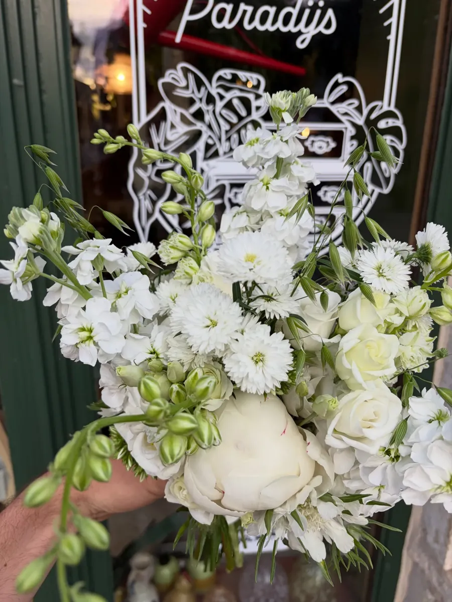
Huwelijk
Jullie trouwdag
Het bruidsboeket, bloemcreaties en de bloemen voor de zaal of de tafels. We bekijken samen wat bij jullie past.
Jasper stelt elk boeket zelf samen, met wat die week mooi is. Binnen snuister je tussen de planten en de brocante, buiten drink je een koffie op de kasseien aan het water.
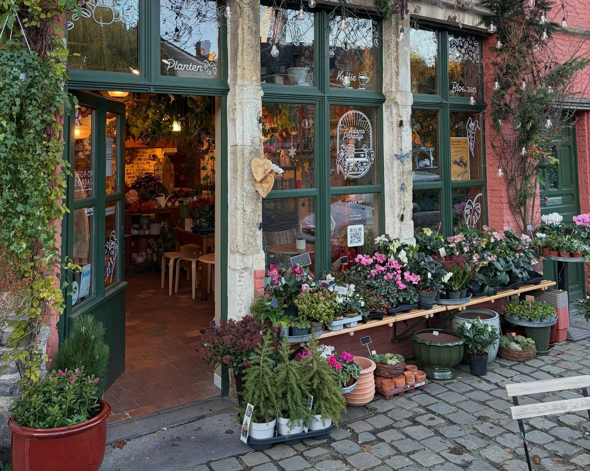
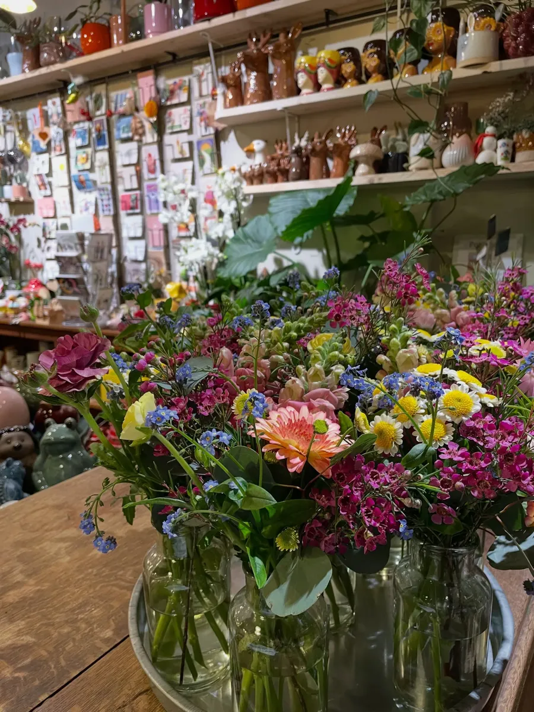
De bloemenmuur vult Jasper telkens aan met wat er die week mooi is. Pioenen in het voorjaar, zonnebloemen in de zomer, dahlia's als de dagen korter worden. Je kiest zelf je stelen, of je zegt voor wie het is en laat hem doen.
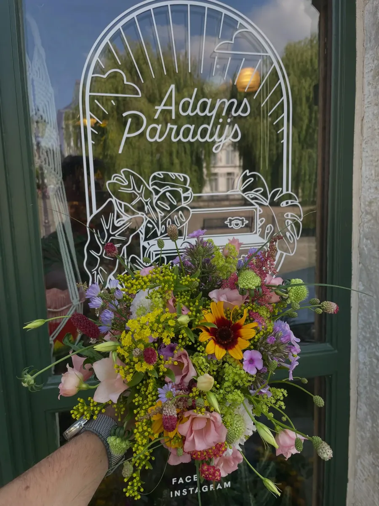
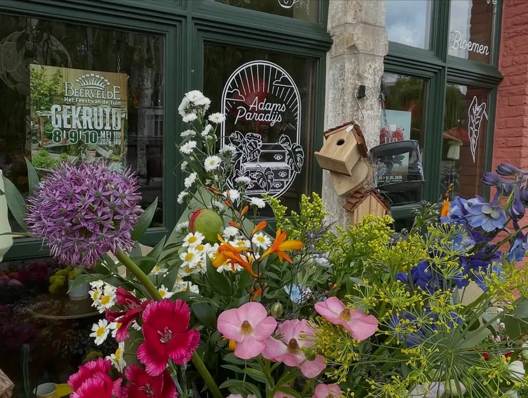
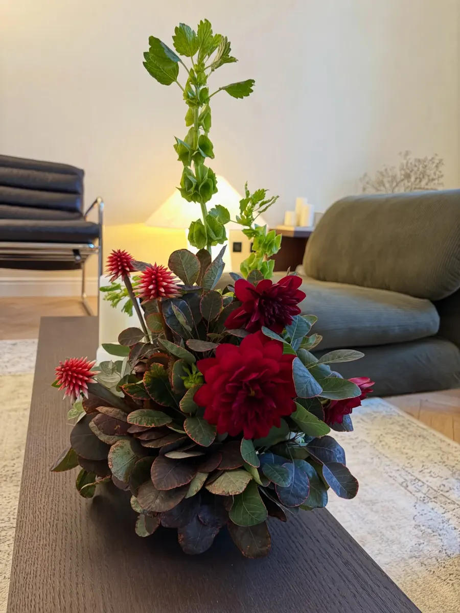
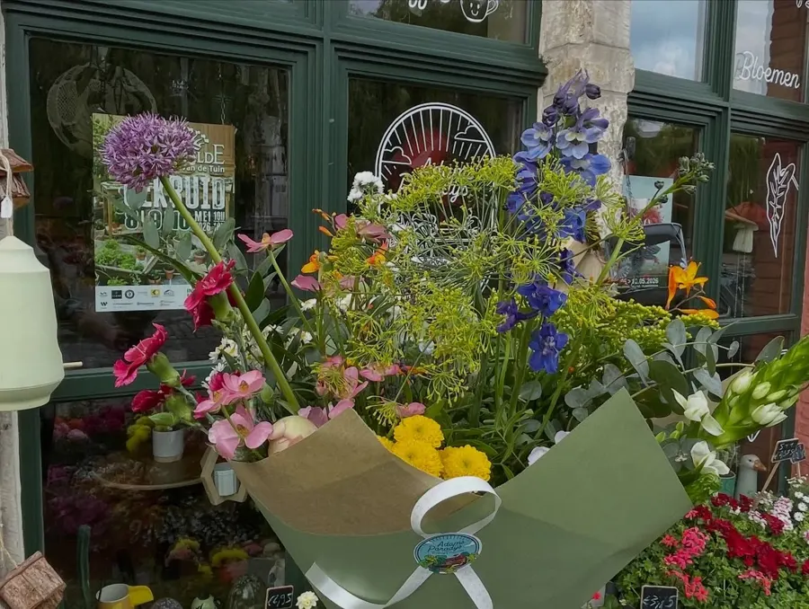
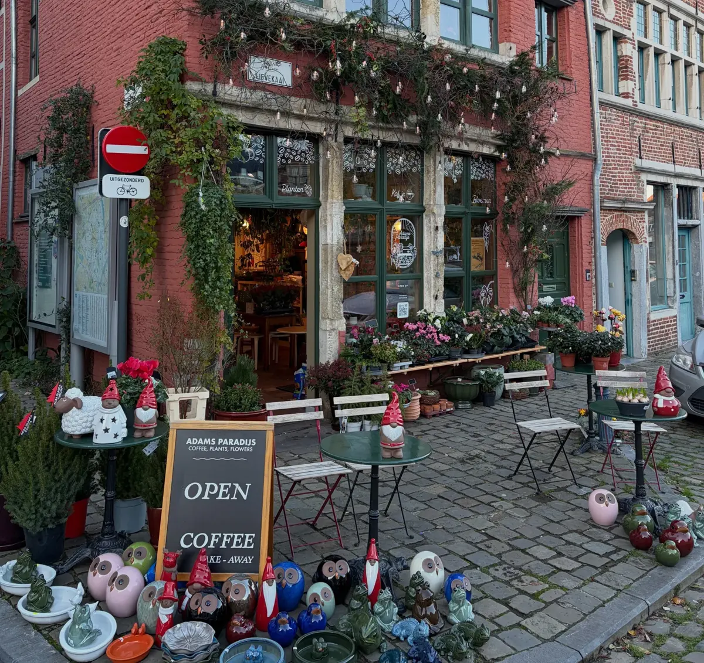
Binnen zit je tussen de planten, buiten op de kasseien aan het water. Neem gerust je tijd, kijk wat er nieuw op de rekken staat en vertrek met iets moois onder je arm.
Koffie en een drankje binnen of op het terras
Kamerplanten met mooie potten erbij
Brocante telkens nieuwe vondsten
"Koffietje tussen de planten in gezelligste straat van Gent. Top combo."Jo Bahama, op Google
Een bruidsboeket, bloemen op een lange tafel of iets voor een afscheid. We bekijken eerst samen wat bij jullie past, en maken het dan tot in de kleinste details in orde.

Het bruidsboeket, bloemcreaties en de bloemen voor de zaal of de tafels. We bekijken samen wat bij jullie past.
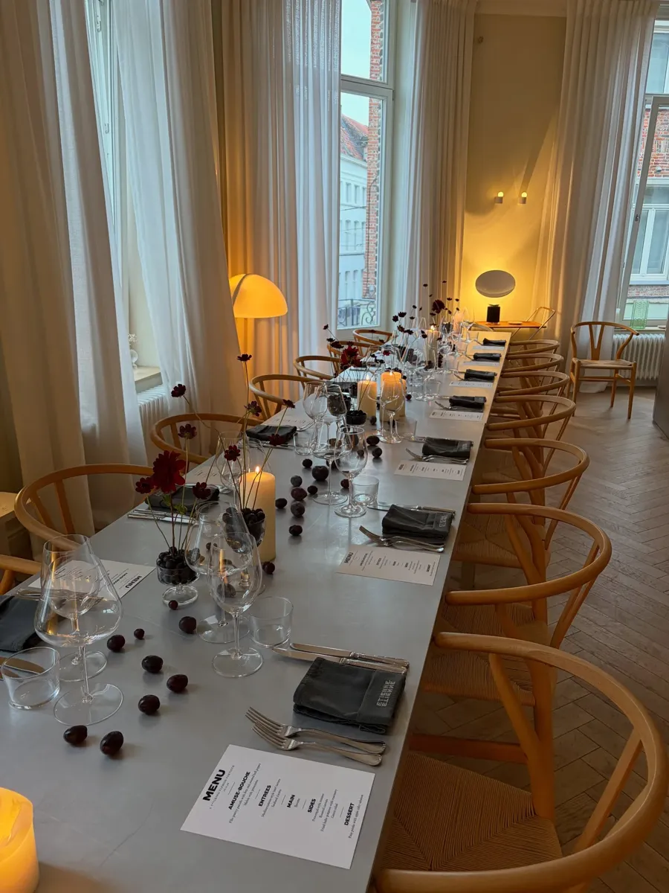
Van een diner thuis tot een groot evenement. Bloemen die de sfeer maken, op maat van de ruimte.
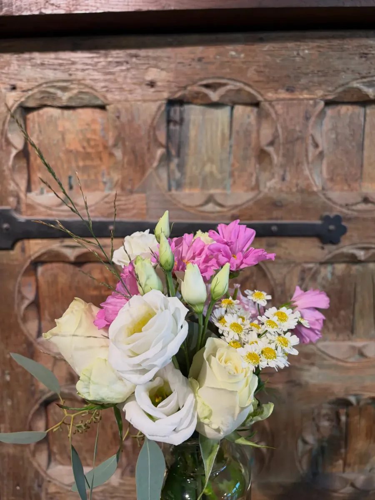
Grafwerk en bloemen voor een uitvaart, met zorg gemaakt. Bel gerust, dan regelen we het samen.
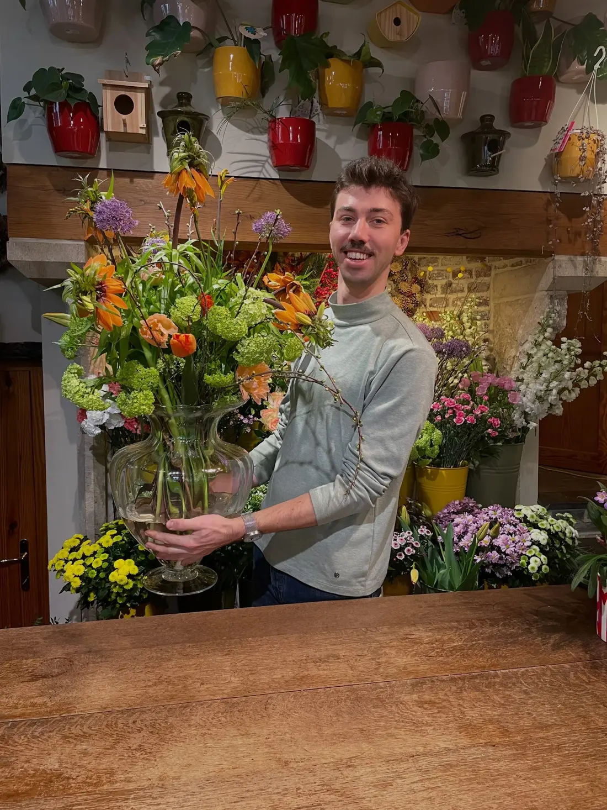
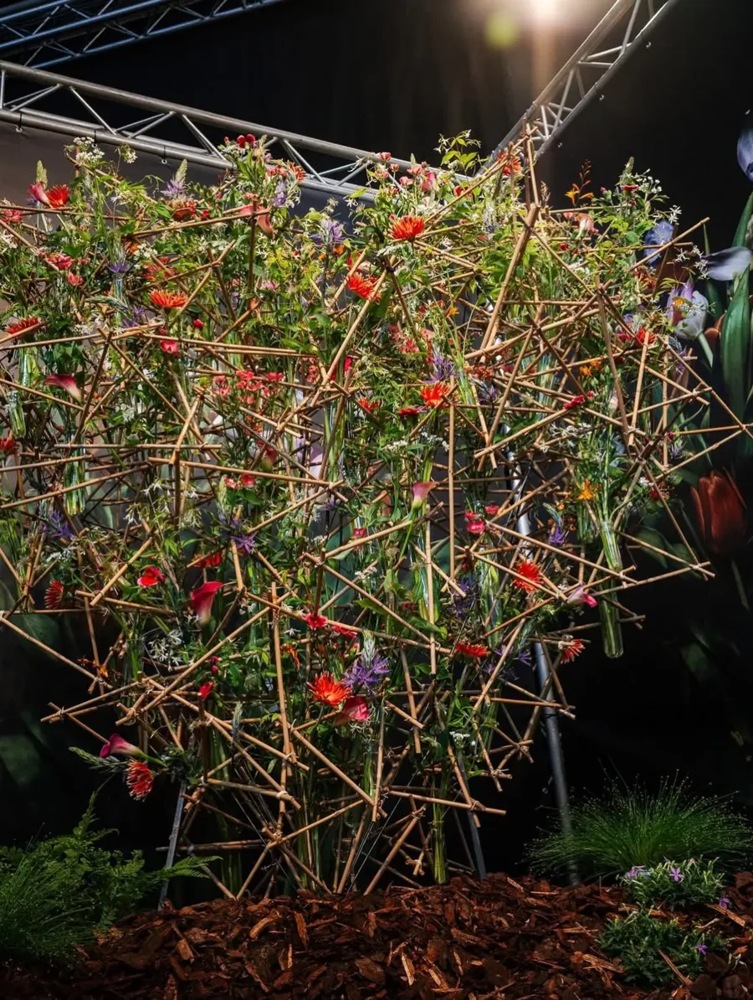
Het begon met een liefde voor bloemen en planten, en werd mijn eigen zaak aan de Lievekaai. Ik sta zelf in de winkel en maak elk boeket zelf. Geen standaardwerk, maar bloemen met karakter.
Dit voorjaar stond Adams Paradijs met een eigen installatie op de Floraliën in onze thuisstad.
"Super gezellige zaak. Dronk er een koffietje omringd door planten, met een super sympathieke en gepassioneerde uitbater. Op de mooiste plek van Gent, Lievekaai. Ben met een schoon samengesteld boeket naar huis gegaan."
Olivier De Geyter op Google"Altijd kwaliteitsvolle, verse bloemen en met veel smaak samengesteld. Je wordt er ook telkens opnieuw vriendelijk ontvangen, wat echt het verschil maakt."
Griet Voet op Google"Ik word zo gelukkig van deze winkel. Je kan er 5x een toer doen en telkens iets anders zien. En zéér schappelijke prijzen!"
Anne op GoogleAan de Lievekaai, tussen het Patershol en het Prinsenhof. Kom kiezen, drink iets op het terras, of stuur Jasper een berichtje als je een boeket wil laten klaarzetten.
0470 33 34 08 · adams.paradijs@gmail.com
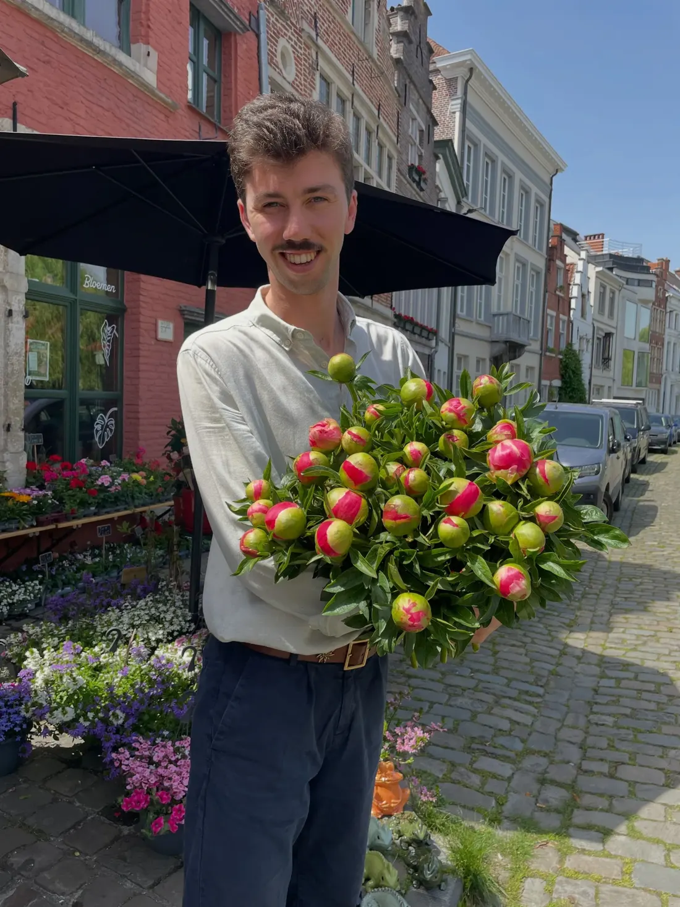
Ik maakte deze demo voor jullie om te tonen wat er kan. Na een kort gesprek maak ik er iets veel persoonlijkers van, helemaal naar jullie wens.
Vrijblijvend. Ik kom langs of we bellen.
Op maat, op jullie eigen domein.
Geen voorschot. Jullie betalen pas als alles klaar is.
Hosting, domeinnaam en kleine wijzigingen, zoals nieuwe openingsuren.
Omdat een voorbeeld meer zegt dan een mail. Zo zien jullie meteen wat er kan, en het kost jullie niets.
Nee. Het gesprek is vrijblijvend. Vinden jullie het niks, dan is het daarmee gedaan.
Na ons gesprek staat jullie site binnen 10 tot 14 dagen online.
Zeker. Jullie domeinnaam kan gewoon blijven, de nieuwe site komt in de plaats van de oude.
Nee, dat doe ik op basis van ons gesprek. Eigen foto's zijn mooi meegenomen, maar niet nodig om te starten.